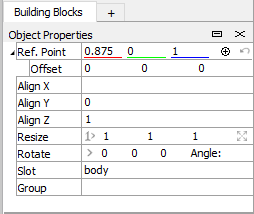
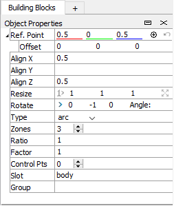
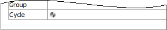
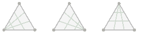
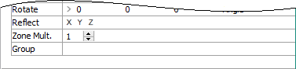
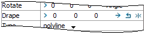
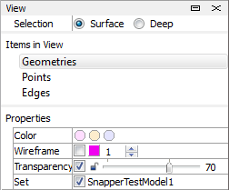
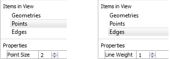

控制面板
- 控制面板中有几组控件是块体构建窗格专用的。
- 对象属性
- 视图（View）
对象属性

图 1：多个选中点的对象属性。
参考点和偏移
参考点属性显示操纵柄的位置。您可以输入新的实际坐标，或输入相对当前位置的偏移。与用鼠标拖动中心点相比，这有助于更精确地定位操纵柄。移动操纵柄将使选中的对象移动相同的量。
- 如果希望更改缩放或旋转命令的中心点，有几种方法可以在不移动所选对象的情况下移动操纵柄：
- 拖动操纵柄时按住 Alt 键；或
- 按住 Alt 键并单击块体上的任意位置；或
- 右键单击操纵柄的中心点以显示上下文菜单，然后选择“将操纵柄移至…”并输入精确坐标。
当操纵柄离开其默认位置时，“参考点”行右侧的指示器将改变外观（）。单击该箭头可将操纵柄恢复到默认位置。
对齐 X、对齐 Y、对齐 Z
当选择中包含面、棱边或多个点时，会出现对齐字段。如果所选对象的所有点已位于沿某一轴线的同一位置，则该位置将显示在相应的对齐字段中。
在其中一个字段中输入数值，将使所选对象中的所有点移动到该轴线上的该位置。
缩放
编辑字段中包含每个轴的缩放倍数。这些值默认为 1，当其中任一值改变时，两个按钮即变为可用。最左侧的按钮将数值重置为 1，最右侧的按钮则执行缩放。按 Return 或 Enter 键也会沿 3 个轴进行缩放。
选中的对象相对于操纵柄/参考点的位置进行缩放。
旋转
旋转以参考点（操纵柄）作为旋转中心。旋转轴由 X、Y 和 Z 字段指定。输入角度后，选中的对象即被旋转。
您可以使用选中的棱边来定义旋转轴。选中一条棱边后，单击轴字段旁边的导入按钮（）。然后输入角度即可进行旋转。
分组/槽位
分组名称可以指定给块体、面、棱边和点（但不能指定给控制点）。通过为每个槽位指定一个分组，可以为同一对象指定多个分组名称。
块体的上下文菜单中包含按分组选择、显示和隐藏块体的命令。
有关更多信息，请参阅高亮显示分组（Highlighting Groups）主题。

图 2：选中棱边的对象属性。
类型
选中一条或多条棱边时，会出现类型字段。当所有选中的棱边类型相同时，将显示类型名称（圆弧、折线或样条曲线）。如果其中一条棱边的类型不同，则显示短横线。您可以从列表中选择类型，以更改所有选中棱边的类型。
网格单元
选中一条或多条棱边时，会出现网格单元数字段。它显示为所有选中棱边指定的网格单元数，如果并非所有棱边的网格单元数相同，则显示短横线。在此处输入数值将为所有选中棱边设置网格单元数。
力比
比率决定沿棱边各网格单元的相对长度。
选中一条或多条棱边时，会出现比率字段。它显示指定给所有选中棱边的比率，如果并非所有棱边的比率相同，则显示零。在此处输入数值将为所有选中棱边设置比率。
系数
与比率相比，系数是确定网格单元分布的另一种方式。系数是沿棱边第一个网格单元的尺寸与最后一个网格单元尺寸之比。
选中一条或多条棱边时，会出现系数字段。它显示指定给所有选中棱边的系数，如果并非所有棱边的系数相同，则显示零。在此处输入数值将为所有选中棱边设置系数。
棱边控制点
选中一条或多条棱边时，会出现棱边控制点字段。它显示每条选中棱边所具有的控制点数量，如果并非所有棱边的数量相同，则显示短横线。输入数值将为所有选中棱边设置控制点数量。
选中一个或多个面时也会出现该字段，此时它对所选面的棱边进行操作。
该功能旨在与披覆命令配合使用，以提高所选区域棱边的分辨率。
面控制点
选中一个或多个面时，会出现面控制点字段。它显示每个所选面的控制点矩阵尺寸（n x n），如果并非所有面的尺寸相同，则显示短横线。输入数值将为所有所选面设置矩阵尺寸。
该功能旨在与披覆命令配合使用，以提高所选区域面的披覆分辨率。
循环

图 3：三角形面的循环控件。
选中单个面时会出现循环控件，它仅适用于三角形面。单击它将使退化角点绕三角形面旋转。（下面显示了三种可能的方位。）这可能是使模型进入可生成网格单元的有效状态所必需的。


镜像

图 4：块体的镜像和网格单元倍数控件。
选中一个或多个块体时会出现镜像控件，且仅当所选块体未与任何未选中的块体附着时才可用。镜像使所选块体沿所选轴成为其自身的镜像。单击 X、Y 或 Z 轴按钮即可使块体镜像。
网格单元倍数
选中一个或多个块体时，会出现网格单元倍数字段。它显示所有所选块体的倍数，如果并非所有所选块体的倍数相同，则显示短横线。输入数值将为所有所选块体设置网格单元倍数。
增大网格单元倍数不会提高披覆分辨率。
披覆
当几何数据集加载到块体集合中后，只要选中一个或多个点、棱边或面，就会出现披覆控件。
披覆使点沿指定方向移动，直到与几何数据集中的多边形相遇。

图 5：点、棱边和面的披覆控件。
最左侧的控件允许您从选中的棱边复制矢量，以确定可以发生披覆的方向。您也可以直接在编辑字段中输入矢量。
右侧的三个按钮用于对选中的点、棱边或面执行披覆。一个按钮沿指定矢量的方向进行披覆。一个按钮沿相反方向进行披覆。最后一个按钮沿两个方向进行披覆，且只执行一次校验以节省时间。无论块体构建窗格中选中的是哪种对象，发送到控制台的披覆命令都将指定对点进行披覆。
视图
选择：表面/深部
选择控件让您可以在表面选择和深部选择之间切换，此处（here）对此进行了说明。

图 6：选中几何时的视图控件组。
“视图中的项目”部分列出了块体构建窗格中可以为其设置属性的项目种类。
几何
如果已导入任何几何数据集，则会出现几何项目，且属性部分中会有内容。
颜色：单击其中一个彩色圆点，以设置几何数据的显示颜色。
线框：这些控件用于确定线框是否可见、其颜色以及线条的粗细。
透明度：这些控件用于确定几何数据是否透明，以及透明度是否锁定在 70% 或更高。滑块控件可以用鼠标移动，数值也可以编辑。
集合：此部分列出加载到程序中的所有几何数据集。集合名称旁的复选标记表示该几何集已加载到当前的块体集合中。
点和棱边
可使用这些控件设置点的大小和线宽。

图 7：选中点或棱边时的视图控件组。
| 这些内容对您有帮助吗？… 版权与免责声明 | FLAC3D © 2019, Itasca | 原文更新于 2020 年 10 月 8 日 |